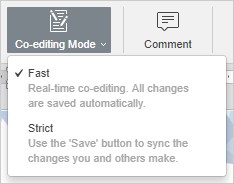
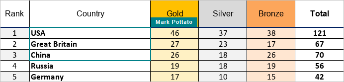
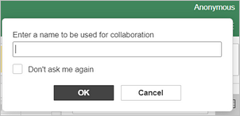

Zajedničko uređivanje tabela u realnom vremenu
Uređivač tabela omogućava vam da održavate stalan timski pristup toku rada: delite datoteke i fascikle, komunicirate direktno u uređivaču, komentarišete određene delove tabela koji zahtevaju dodatni unos trećih strana, čuvate verzije tabela za buduću upotrebu.
U Uređivaču tabela možete sarađivati na tabelama u realnom vremenu koristeći dva režima: Brzi ili Strogi.
Režimi se mogu izabrati u Naprednim podešavanjima. Takođe je moguće izabrati potreban režim pomoću ikone Režim zajedničkog uređivanja na kartici Saradnja na gornjoj traci sa alatkama:

Broj korisnika koji trenutno rade na tabeli prikazan je na desnoj strani zaglavlja uređivača – . Ako želite da vidite ko tačno sada uređuje datoteku, možete kliknuti na ovu ikonu ili otvoriti panel Ćaskanje sa kompletnom listom korisnika.
Brzi režim
Brzi režim se koristi podrazumevano i prikazuje izmene drugih korisnika u realnom vremenu. Kada zajedno uređujete tabelu u ovom režimu, mogućnost Ponovi poslednju poništenu radnju nije dostupna. Ovaj režim prikazuje radnje i imena saradnika dok uređuju podatke u ćelijama. Različite boje ivica takođe označavaju opsege ćelija koje je neko drugi trenutno izabrao.
Postavite pokazivač miša iznad izbora da biste prikazali ime korisnika koji ga uređuje.
Strogi režim
Strogi režim se bira kako bi se sakrile izmene koje su napravili drugi korisnici sve dok ne kliknete na ikonu Sačuvaj da biste sačuvali svoje izmene i prihvatili izmene saradnika.
Kada više korisnika istovremeno uređuje tabelu u Strogom režimu, uređene ćelije su označene isprekidanim linijama različitih boja, a kartica lista na kojoj se te ćelije nalaze obeležena je crvenim markerom. Pređite kursorom miša preko jedne od uređenih ćelija da biste prikazali ime korisnika koji je trenutno uređuje.

Čim jedan od korisnika sačuva izmene klikom na ikonu , ostali će videti napomenu u gornjem levom uglu koja kaže da imaju ažuriranja. Da biste sačuvali izmene koje ste vi napravili, kako bi ih drugi korisnici mogli videti, i preuzeli ažuriranja koja su sačuvali vaši saradnici, kliknite na ikonu u gornjem levom uglu gornje trake sa alatkama.
Režim Live Viewer
Režim Live Viewer koristi se da biste videli izmene koje su napravili drugi korisnici u realnom vremenu kada je tabela otvorena od strane korisnika sa pravima pristupa Samo pregled.
Da bi režim ispravno funkcionisao, uverite se da je u Naprednim podešavanjima uređivača aktivno polje za potvrdu Prikaži izmene drugih korisnika.
Anonimno
Korisnici portala koji nisu registrovani i nemaju profil smatraju se anonimnim, iako i dalje mogu da sarađuju na dokumentima. Da bi im se dodelilo ime, anonimni korisnik treba da unese željeno ime u odgovarajuće polje koje se pojavljuje u gornjem desnom uglu ekrana kada prvi put otvori dokument. Aktivirajte polje za potvrdu „Ne pitaj me ponovo“ da biste sačuvali ime.
